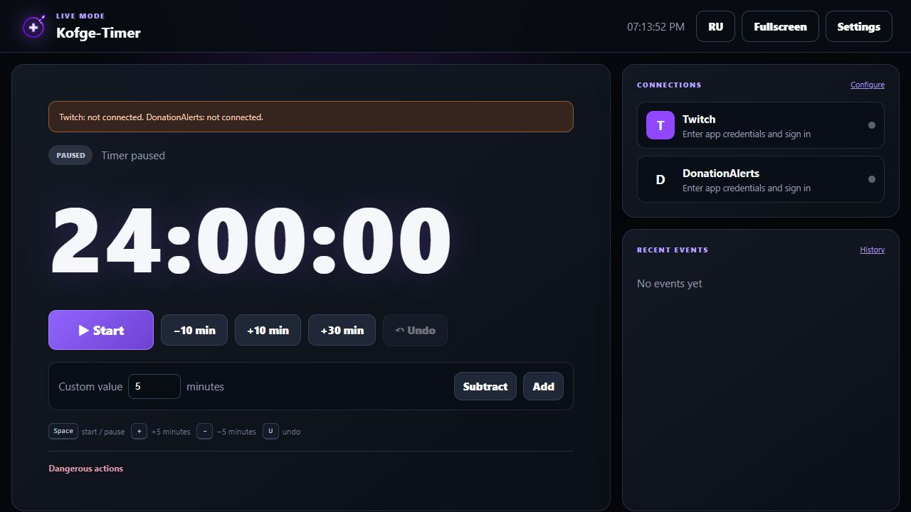

Гибкие правила времени
Донаты, подписки Twitch, баллы канала и поддерживаемые платные события YouTube. Настраивай лимиты, безопасно проверяй правила и отменяй начисления.
БЕСПЛАТНО · WINDOWS 10/11 · OBS
Донаты, события Twitch и поддерживаемые платные события YouTube автоматически добавляют время. Управляй марафоном из локальной панели в браузере. Без аккаунта и платной подписки.
v0.1.34 · Windows 10/11 x64 · ZIP со всем необходимым · Без рекламы в приложении и OBS
Что нового в v0.1.34 →СОСРЕДОТОЧЬСЯ НА СТРИМЕ
Донаты, подписки Twitch, баллы канала и поддерживаемые платные события YouTube. Настраивай лимиты, безопасно проверяй правила и отменяй начисления.
Выбирай RUB, USD, EUR или CNY. Вводи курсы вручную или загружай дневные справочные курсы Банка России.
Режим эфира, панель OBS, темы, горячие клавиши и локальные резервные копии. Настройки остаются на твоём ПК.
РЕАЛЬНЫЙ ИНТЕРФЕЙС
Live Mode держит таймер и основные элементы управления в одном компактном окне. На скриншоте используются демонстрационные данные.

ЧЕТЫРЕ ПРОСТЫХ ШАГА
Сохрани все файлы в одной доступной для записи папке. Не запускай EXE прямо из архива.
Windows запросит разрешение администратора, затем в браузере откроется локальная панель.
Подключи нужные сервисы и настрой начисления. Вручную таймер работает и без подключений.
Один раз скопируй URL оверлея из панели. Для отображения в OBS приложение должно работать.
Обновляешь старую платную/тестовую сборку? Полностью закрой её, сохрани копию папки data и замени файлы приложения файлами из ZIP. Папку data сохрани. Первый переход выполняется вручную.
Twitch поддерживает подписки, подарочные подписки и выбранные награды за баллы канала. YouTube поддерживает Super Chat, Super Stickers и поддерживаемые платные события членства. Для внешних донатов можно использовать DonationAlerts, Streamlabs и StreamElements. Для YouTube сейчас нужен собственный Google OAuth-клиент, а события проверяются с интервалом не менее 30 секунд.
Да. Все функции таймера доступны без ключа, регистрации, платной подписки и ограничения активаций по ПК. Подписки Twitch — события зрителей, а не оплата приложения.
Ручное управление и локальный оверлей OBS работают без интернета. События подключённых сервисов требуют сети. Обновления проверяются при запуске, а курсы валют загружаются только по нажатию кнопки.
Приложение проверяет публичные GitHub Releases. Перед установкой проверяются цифровая подпись, размер и SHA-256 архива. Установка запрашивает подтверждение, ставит таймер на паузу и создаёт резервную копию.
Напиши на kofge.dev@gmail.com: укажи версию и опиши проблему. Не отправляй settings.json, Client Secret, пароли и токены.